Civil Engineering Defense
01
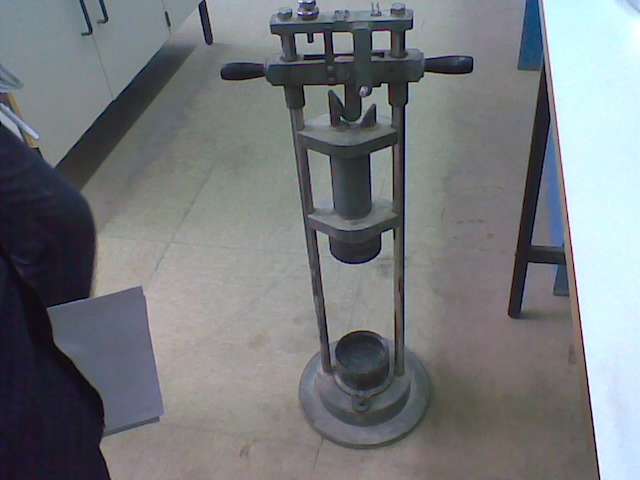
CIVIL ENGINEERING RESEARCH
تأثير مصدر الركام الخشن على مقاومة الخرسانة للانضغاط
ملاحظة: راجع بيانات الجامعة والمشرف قبل العرض النهائي.
تعتبر الخرسانة في الوقت الحالي مادة البناء الأساسية لتنفيذ المباني والمنشآت المختلفة، وذلك بسبب المزايا التي تتميز بها الخرسانة وتوفر مكوناتها الأساسية وقلة تكلفتها مقارنة مع المواد الإنشائية الأخرى.
وحيث إن الخرسانة خليط مكوّن من عدة مواد غير متجانسة، إلا أن الجزء الأكبر من محتواها هو الركام بنوعيه الخشن والناعم، إذ يشكّل ما يقارب 60–75% من حجمها الكلي.
لذلك فإن خواص الركام تؤثر بشكل مباشر وكبير على خصائص الخرسانة الطازجة والمتصلدة.
وينقسم الركام إلى ركام ناعم مثل الرمل وركام خشن مثل الحصى أو الحجر المكسر، ويؤدي كل منهما دورًا مهمًا في تحديد مقاومة الخرسانة ومتانتها وقابليتها للتشغيل.
المقدمة
مشكلة الدراسة
إن العديد من مواد البناء بما فيها الخرسانة والأسفلت تستخدم الركام كمادة رئيسية، كما أن استعمال الركام في الخرسانة يؤدي إلى خفض تكلفة الإنتاج وزيادة مقاومة الخلطات الخرسانية.
يشكل الرمل والركام ما بين 60 إلى 75 بالمائة من حجم الكتلة الخرسانية، ولذلك فإن خصائص الركام تسهم في جعله مادة ضرورية في تشييد وصيانة الطرق والأرصفة ومواقف السيارات ومدارج المطارات وخطوط السكك الحديدية والمباني.
مرحلة تصميم معظم مشاريع البناء تحتاج إلى تحليل دقيق لمصدر الركام من حيث النوع والحجم والخواص الفيزيائية والميكانيكية.
يؤثر مصدر الركام الخشن بشكل مباشر على مقاومة الخرسانة نتيجة اختلاف خواصه الفيزيائية والميكانيكية، وقد يؤدي عدم أخذه في الاعتبار عند استخدام الركام المحلي إلى تفاوت في مقاومة الخرسانة وعدم تحقيق المقاومة المطلوبة.
أهمية الدراسة
تعتبر الخرسانة بأنواعها من أكثر الموضوعات التي تشغل أهمية في مجال الإنشاءات الهندسية والتشييد والبناء، والذي يؤثر بشكل إيجابي على مجال العمارة والاقتصاد للدولة.
تساعد هذه الدراسة على فهم العلاقة بين مصدر الركام الخشن ومقاومة الخرسانة، الأمر الذي يساهم في تحسين تصميم الخلطات الخرسانية واختيار الركام المناسب لتحقيق المتطلبات الهندسية للمشاريع الإنشائية.
تكتسب الدراسة أهمية عملية من خلال دعم استخدام الركام المحلي بعد تقييمه علميًا، مما يقلل من التكاليف الاقتصادية ويحد من المشاكل الناتجة عن استخدام مواد غير مناسبة.
تساهم الدراسة في رفع مستوى الجودة والسلامة في المنشآت الخرسانية.
الهدف من الدراسة
- 01تهدف هذه الدراسة إلى دراسة وتحليل تأثير مصدر الركام الخشن على مقاومة الخرسانة.
- 02تتم الدراسة من خلال مقارنة مقاومة الخرسانة المصنوعة باستخدام ركام خشن من مصادر مختلفة، مع ربط ذلك بالخصائص المخبرية للركام.
- 03تسعى الدراسة إلى تحديد مدى تأثير الخصائص الفيزيائية والميكانيكية للركام على جودة الخرسانة.
- 04تساعد النتائج في اختيار المصدر الأنسب لتحقيق المتطلبات الهندسية.
- 05لا يتم الحكم النهائي على مقاومة ضغط الخرسانة دون نتائج اختبار المكعبات الفعلية.
فرضيات الدراسة
الفرضيات
- 1
- يختلف تأثير الركام الخشن على مقاومة الخرسانة باختلاف مصدره.
- 2
- تؤدي الخصائص الفيزيائية والميكانيكية للركام الخشن الناتجة عن اختلاف المصدر إلى تفاوت في مقاومة الضغط للخرسانة.
- 3
- يحقق بعض مصادر الركام الخشن مقاومة خرسانية أعلى مقارنة بمصادر أخرى عند استخدام نفس نسب الخلط وظروف المعالجة.
تنبيه علمي
- هذه الفرضيات تحتاج إلى نتائج ضغط فعلية للتحقق النهائي.
- نتائج التهشيم والصدمية تعطي مؤشرًا على مقاومة الركام فقط.
- لا توجد في فصل النتائج قيم ضغط منشورة للمكعبات.
مراجعة البيانات ورد ترتيب نسبة الخلط في الملف بصيغة قد تتأثر باتجاه الكتابة RTL، لذلك يجب تأكيد ترتيب 1:2:3 أو 3:2:1 من السجل المختبري.
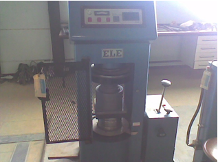
2حدود الدراسة
حدود زمنية:
زمن الدراسة من شهر نوفمبر 2025 إلى شهر يوليو 2026م.
حدود مكانية:
مكان الدراسة في مدينة بنغازي، وتستخدم جميع المواد منها ما عدا مادة الركام الخشن حيث يتغير مصدره.
المنهجية المتبعة لتحقيق الهدف
اعتمدت هذه الدراسة على المنهج التجريبي لدراسة تأثير مصدر الركام الخشن على مقاومة الخرسانة.
حيث سيتم اختيار عدة مصادر مختلفة للركام الخشن، ويتم فحص خواصها الفيزيائية والميكانيكية، مثل التدرج الحبيبي ونسبة الامتصاص والكثافة النوعية ومساحة السطح والوزن النوعي والصدمية والتهشيم.
وتم تقييم مقاومة الخرسانة من خلال اختبار مقاومة الضغط فقط، وتحت ظروف معالجة مختبرية محددة ولفترات زمنية معينة.
تنبيه: فصل النتائج المتاح لا يحتوي على نتائج ضغط منشورة، لذلك تعرض الشرائح نتائج الركام فقط ولا تخترع نتائج خرسانية.
الركام
يعرف الركام بأنه الحبيبات الصلبة من الرمل والحصى والزلط وكسر الصخور الكبيرة، ويتم وضعه في الخرسانة باعتباره مادة مالئة رخيصة الثمن.
وله فائدة في مساعدة الخرسانة على مقاومة الأحمال والبري والحرارة وعوامل الاحتكاك وحدوث أي بلل أو جفاف.
وله وظيفة مهمة جدًا في تقليل التغيرات الحجمية التي تحدث داخل الخرسانة والتي تنتج من الأسمنت.
أنواع الركام
أنواع الركام متعددة على حسب المصادر، الملمس، المقاس، الشكل، امتصاصه للمياه، التدرج الحبيبي، الخواص الكيميائية، الخصائص الميكانيكية، مقاومته للتآكل والبري، الوزن، التمدد الحراري، والحرارة النوعية.
تقسيم الركام حسب الملمس
- 01الركام الناعم: مثال عليه الزلط والرمل.
- 02ركام حبيبي: مثال عليه الحجر الرملي.
- 03الركام الخشن: مثال عليه البازلت.
- 04ركام زجاجي: مثال عليه الحجر الصوان الأسود.
- 05ركام بلوري: مثال عليه الجرانيت.
- 06ركام معشش: مثال عليه الحجر الخفاف.
تقسيم مقاسات الركام ثلاثة أنواع رئيسية
الركام الصغير
هو الركام الذي يتكون من حبيبات صغيرة الحجم بحيث يمكن أن تمر من المنخل القياسي 4.75 مم، ومثال على ذلك الرمل.
الركام الكبير
هو الركام الذي تتراوح حجم حبيباته ما بين 4.75 مم إلى 150 مم، ومثال على ذلك الزلط والسن.
الركام الشامل
هو عبارة عن مزيج ما بين كل من الركام الصغير والركام الكبير بنسب محددة حسب احتياج الخلطة الخرسانية.
تصنيف الركام من حيث شكل الحبيبات
- 01الركام المستدير
- 02الركام الزاوي
- 03الركام غير المنتظم
- 04الركام المبطط أو المفلطح والركام العصوي
تقسيم الركام من حيث امتصاص الماء
- 01ركام مجفف بالفرن
- 02ركام مجفف بالهواء
- 03ركام مشبع بالماء
- 04ركام رطب
الخرسانة
تتكون الخرسانة من خلط مجموعة من المواد بنسب مختلفة وهي الركام والإسمنت والماء، وأحيانًا تضاف مواد أخرى تعرف بالإضافات لتحسين خواص معينة في الخرسانة.
خصائص الخرسانة
إن للخرسانة العديد من الخصائص التي تتحدد وفقًا لخصائص المكونات الداخلة في تصنيعها وهي الماء والأسمنت والركام ونسبة الخلط بينها.
- 01قوة تحمل الخرسانة للضغط
- 02قوة الشد للخرسانة
- 03النفاذية
- 04القابلية التشغيلية للخرسانة
المواد المستخدمة
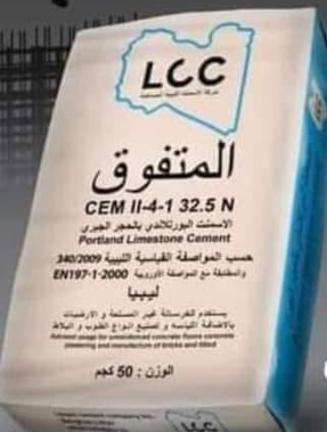
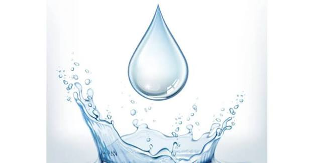
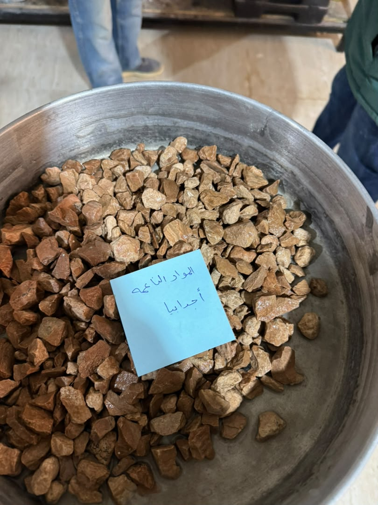
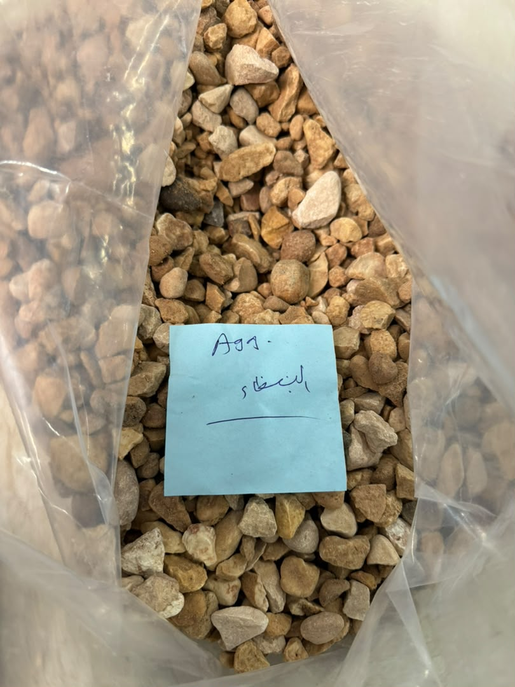
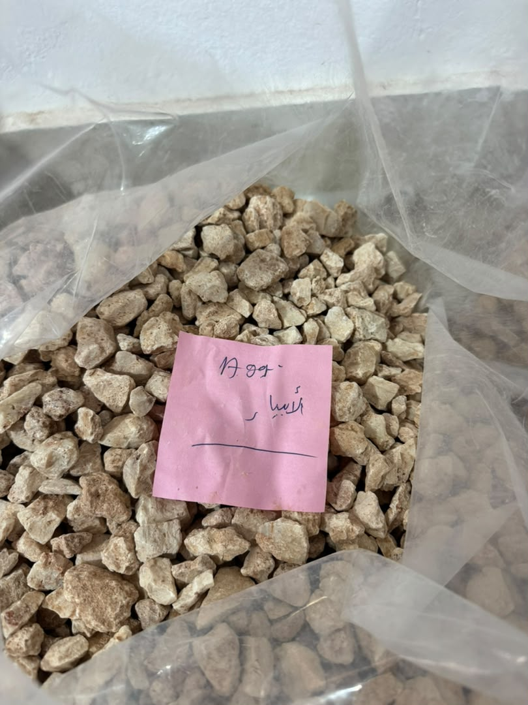
الجانب العملي الأول
هذه الاختبارات تم إجراؤها على ركام أجدابيا، البيضاء، والأبيار، بهدف تحديد الخواص الفيزيائية اللازمة لتصميم الخلطات الخرسانية والمقارنة بين خواص الركام المستخدم.
الاختبارات الخاصة بالتعرف على خواص الأنواع المستخدمة من الركام:
- اختبارات التدرج الحبيبي للركام بنوعيه الناعم والخشن.
- اختبار الوزن النوعي للركام الخشن.
- اختبار الوزن النوعي للركام الناعم.
- اختبار تعيين النسبة المئوية للامتصاص للركام الخشن.
- اختبار تعيين النسبة المئوية للامتصاص للركام الناعم.
- اختبار التهشيم للركام الخشن.
- اختبار الصدمية للركام الخشن.
صور من الجانب العملي
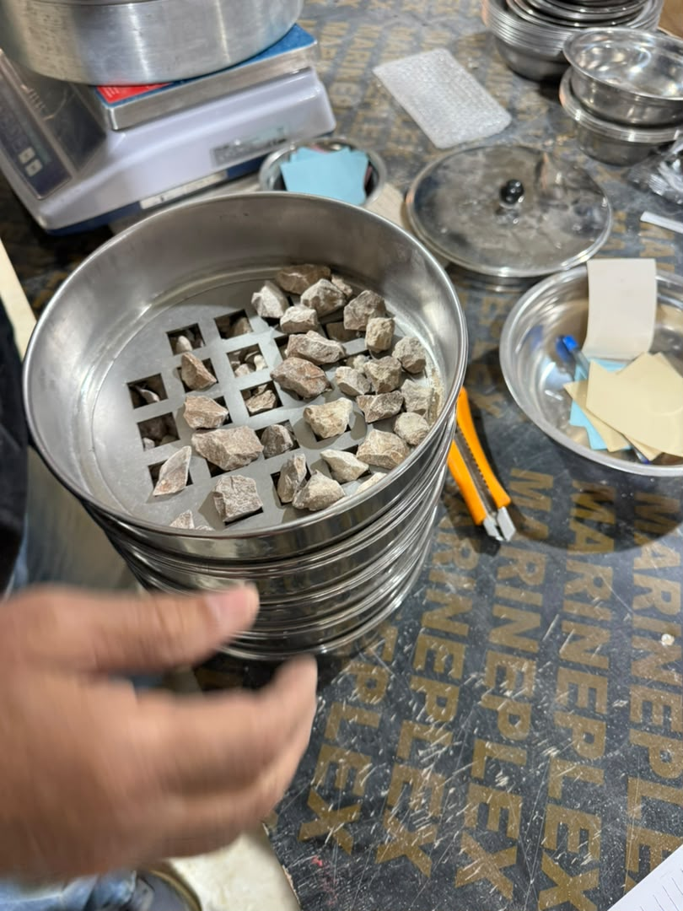
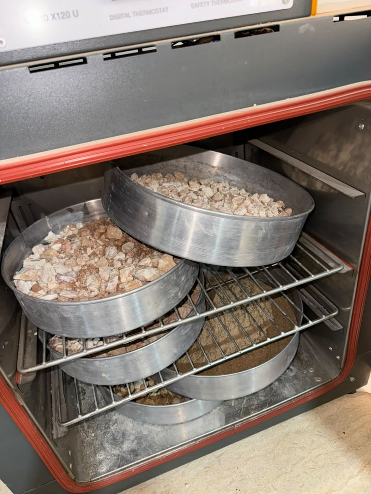
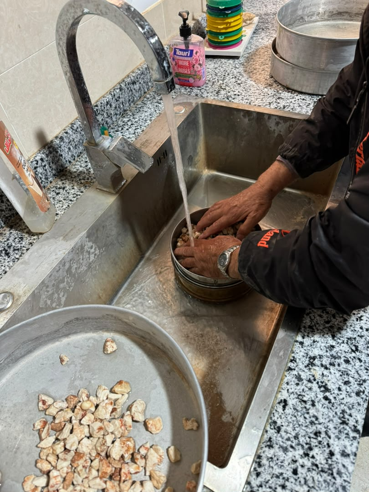
الأجهزة المستخدمة في الاختبارات
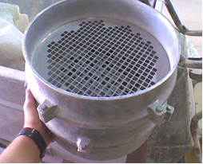
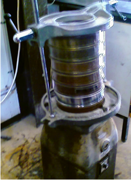
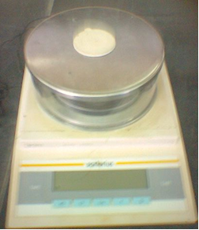
منهجية العمل التجريبي
انقر على أي مرحلة لعرض هدف الاختبار والأداة والنتيجة الناتجة.
الاختبارات والمواصفات
مقارنة التدرج الحبيبي Gradation
معامل النعومة
يجب تفسير معامل النعومة مع التدرج الحبيبي ومجموعة المناخل المستخدمة، وليس منفردًا.
مقارنة قيمة التهشيم
الأقل أفضل في هذا الاختبارأجدابيا الأفضل في مقاومة التهشيم ضمن العينات المختبرة.لا يعني ذلك تفوق مقاومة ضغط الخرسانة.
مقارنة قيمة الصدمية
انخفاض القيمة يعني مقاومة أفضل للأحمال المفاجئة.
جدول المقارنة الكامل
لا يتم تمييز معامل النعومة كقيمة أفضل عالميًا. في التهشيم والصدمية: الأقل أفضل.
تفسير النتائج
أقل تهشيم وصدمية→
مقاومة ميكانيكية أفضل للركام ضمن الاختبارات المتاحة.
امتصاص البيضاء أقل من الأبيار→
مسامية أقل نسبيًا وفق القيم المتوفرة.
مواد ناعمة منخفضة في الأبيار→
مؤشر جيد لنظافة العينة حسب البيانات المتاحة.
غياب نتائج الضغط→
لا يمكن ترتيب الخرسانة حسب مقاومة الضغط.
نتائج اختبارات الركام لا تعوض اختبار مقاومة ضغط الخرسانة.
حدود النتائج وجودة البيانات
- لا توجد نتائج ضغط عند 14 أو 28 يومًا في فصل النتائج.
- لا توجد نتائج واضحة لاختبار الهبوط.
- بعض الخصائص الفيزيائية لأجدابيا غير متوفرة.
- توجد مشكلة حسابية في المواد الناعمة للبيضاء.
- توجد احتمالية غموض في ترتيب نسبة الخلط بسبب RTL.
- نتائج الركام وحدها لا تثبت تأثير المصدر على مقاومة الضغط.
عرض هذه الملاحظات يعزز دقة البحث ولا يقلل من قيمته.
الخلاصة
خصائص الركام + اختبار الخرسانة = قرار هندسي موثوق
التوصيات
Complete Tests
استكمال اختبارات الضغط عند 7 و14 و28 يومًا.
Repeat Samples
إجراء ثلاثة تكرارات على الأقل لكل اختبار.
Validate Data
مراجعة نتيجة البيضاء واستكمال بيانات أجدابيا.
Future Research
دراسة الشد والانحناء والمتانة والنفاذية والانكماش.
شكرًا لحسن استماعكم
الأسئلة والمناقشة
تدرج الأبيار
المصدر: نتائج المشروع – الفصل الرابع.
تدرج البيضاء
المصدر: نتائج المشروع – الفصل الرابع. تم التعامل مع 200 كرقم منخل وليس 200 mm.
تدرج أجدابيا
المصدر: نتائج المشروع – الفصل الرابع. تم التعامل مع 200 كرقم منخل وليس 200 mm.
ركام شط البدين الناعم
وزن العينة الكلي: 500 g
معامل النعومة: 2.46
مدى حجم الحبيبات: 0.075–0.850 mm
المصدر: نتائج المشروع – الفصل الرابع.
أوزان التهشيم والصدمية
شرح الحساب
النتيجة = (W1 − W2) ÷ W1 × 100. يتم التحقق من الحسابات في JavaScript عند تحميل الصفحة.
المعادلات
A: وزن العينة قبل الغسل أو بحالة SSD حسب الاختبار. B: وزن العينة بعد الغسل والتجفيف. D: وزن العينة الجافة بالفرن. W1: الوزن الكلي قبل الاختبار. W2: الوزن المتبقي بعد الاختبار.
المراجع
- فرج سالم حرشة، أبوشعفة أحمد عبدالصمد، 2024، دراسة تأثير تغير نسبة الماء إلى الأسمنت ونسبة الركام للأسمنت على مقاومة الضغط للخرسانة، المجلة الدولية للعلوم والتقنية، العدد 33، المجلد 2.
- إيناس فوزي عبد الكريم حراحشة، 2023، تأثير صفات الركام على خواص الخرسانة، jaspss، الإصدار 5.
لم تُضف مراجع خارجية أو حقول ببليوغرافية غير مكتملة خارج ما ظهر بوضوح في الملف.